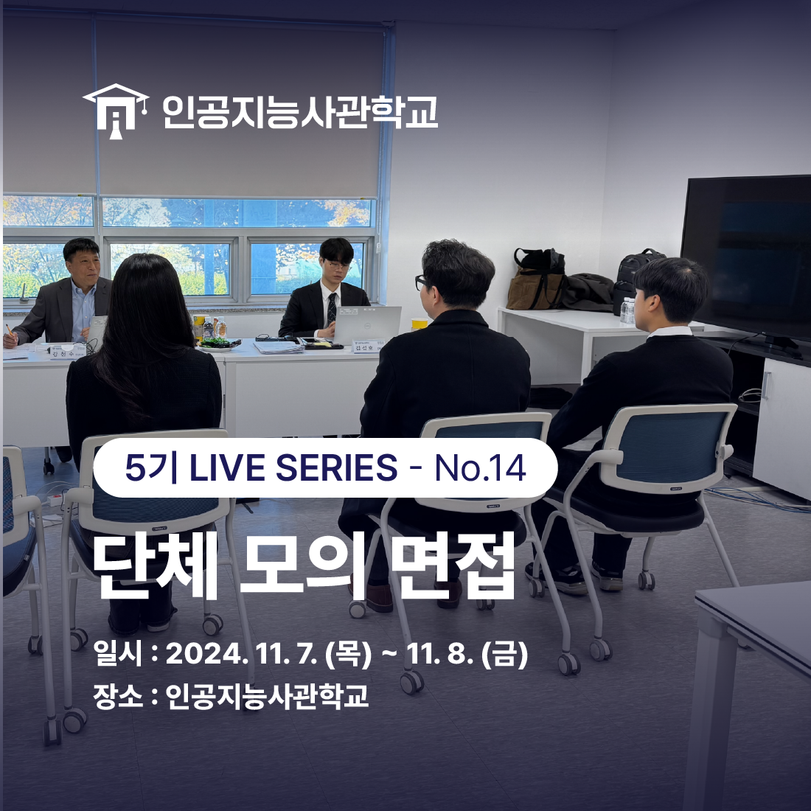
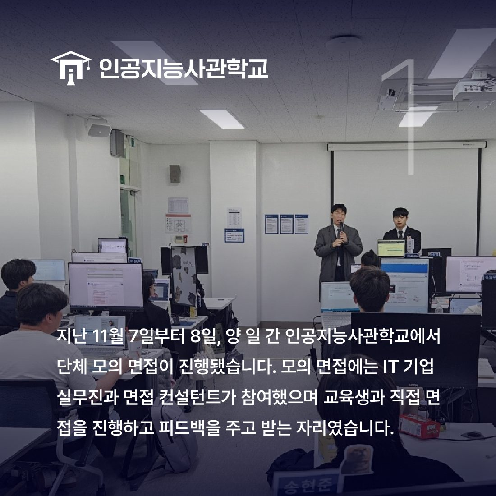
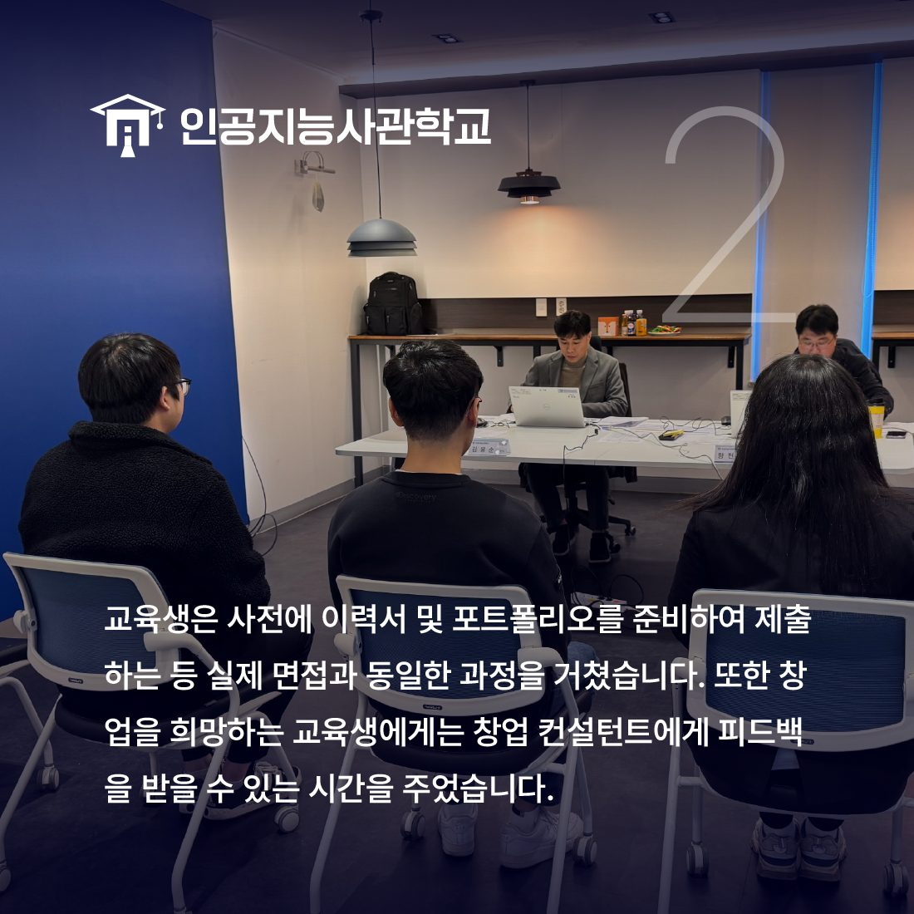
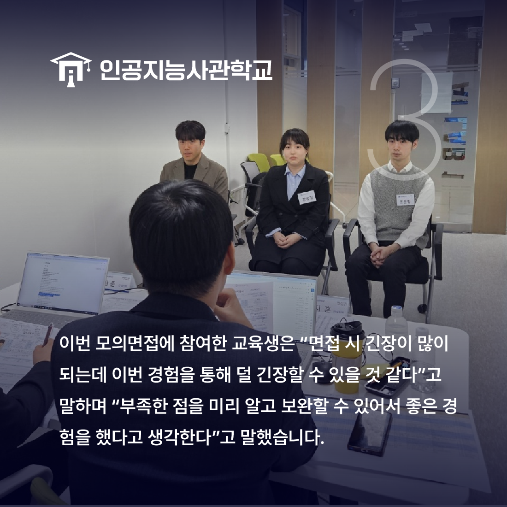

안녕하세요! 인공지능사관학교입니다. 😆

지난 11월 7일부터 8일 양 일 간
인공지능사관학교에서는 <단체모의면접>이 진행됐습니다.

모의면접에는 면접관으로 IT기업의 실무진과
IT 전문 면접 컨설턴트가 참여했습니다.
모의면접은 교육생 면접 진행 후
피드백을 주고 받는 자리로 이루어졌습니다.

교육생은 실제 면접과 같이
사전에 이력서 및 포트폴리오를 준비하고
면접 예상 질문에 대답을 준비했습니다.
또한 창업을 희망하는 교육생에게는
창업 컨설팅이 주어졌습니다.👍

모의면접에 참여한 교육생은 "곧 수료인데
사전에 내 약점이 무엇인지 미리 알고
준비할 수 있어서 좋았다"고 소감을 남겼습니다.